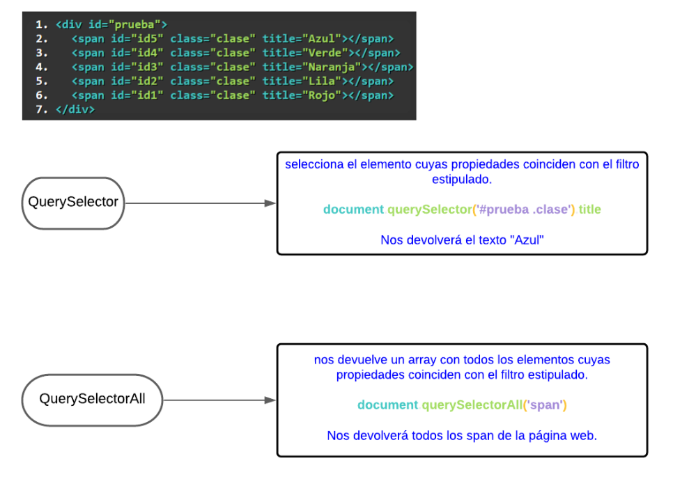

EJERCICIOS JAVASCRIPT
M06_02. Introducció programació web
Variables
Objetos
Interacción entre Sistemas
Formularios
Condicionales
Bucles
M06_03. Objectes JavaScript.
Números
Strings
Arrays
Date
M06_04. Objectes propis.
Funciones y Callbacks
M06_05. Esdeveniments.
Eventos
M06_06. DOM (Document Object Model)
Eventos del DOM
Selectores I
RESUMEN VISUAL SELECTORES

Selectores II
Selectores III: Atributos Personalizados
Selectores IV: Jugando con los Selectores y el Watcher
M06_07 - WebComponents
Ejemplo de ejercicio con WebComponents caseros
Página creada por Frank Santos - 2022